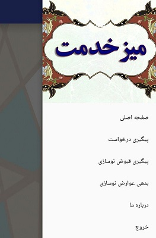
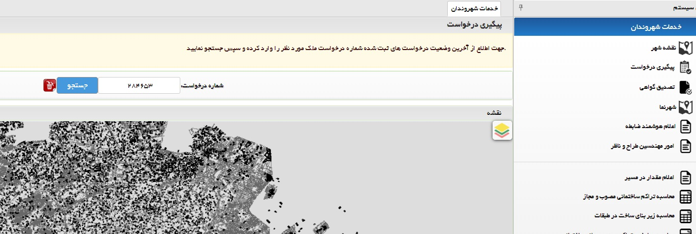
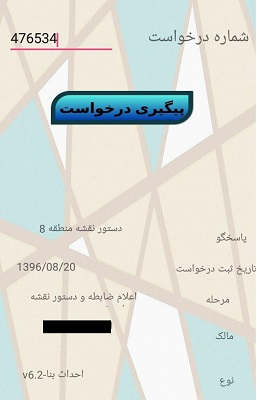

تابستان وقتی که برای دوره ی کارآموزی به شهرداری منطقه دو اصفهان مراجعه کردم قرار بود که در واحد فناوری اطلاعات مشغول شوم اما با توجه به پربودن کارآموزان تصمیم براین شدک که در واحد شهرسازی مشغول شودم
یکی از اتفاقاتی که به طور روزمره با آن مواجه بودیم حضور بی جای مردم برای پرسیدن وضعیت پرونده بود که هم برای آن ها هم برای مسوولین اضافی بود
اینجا بود که تصمیم گرفتم که یک اپ اندروید بسازم تا برخی امکانات سایت شهرداری را برای مشترکین اندروید فراهم کند
جا دارد که از مهندس نامداریان به خاطر ایده های بزرگو همکاری شان تشکر کنم و حیف که تعداد ساعات کارآموزی محدود بود و نشد این برنامه بیشتر گسترش پیدا کند
در تصویر زیر منوی امکانات برنامه را مشاهده می کنیم
برای مرتبط کردن اپ و درخواست ها باید از کتابخانه رتروفیت استفاده می کردم
در تصویر زیر سایت شهرداری را مشاهد میکنیم که و امکاناتی که به مرور باید به این اپ اضافه میشد
با استفاده از مدل سازی جییسون هایی که سایت شهرداری برای پاسخ می فرستاد را با نرم افزار پست من شناسایی کرده بودم و با رتروفیت در فیلد های اندروید به کارگرفتم
در تصویر زیر نسخه ی دمو و با گرافیک اولیه ای این اپ را که با وارد کردن شماره پروند اطلاعات و وضعیت پیگیری را به مراجع می دهد مشاهده می کنیم
لازم به ذکر است که سادگی گرافیک به دلیل دمو بودن و فقط تست کارکردن این بخش است و مسولین گرافیک بعدا بر روی این قسمت به خوبی کار خواهند کرد
